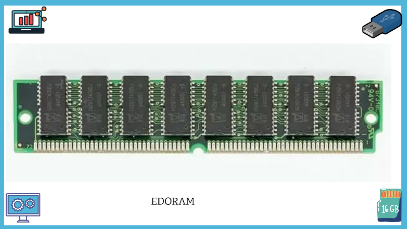
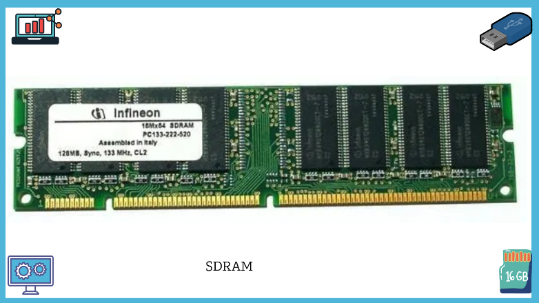
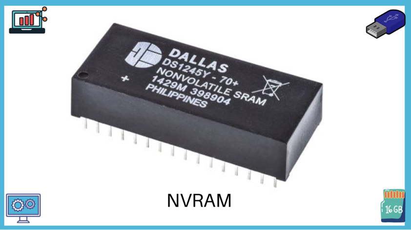
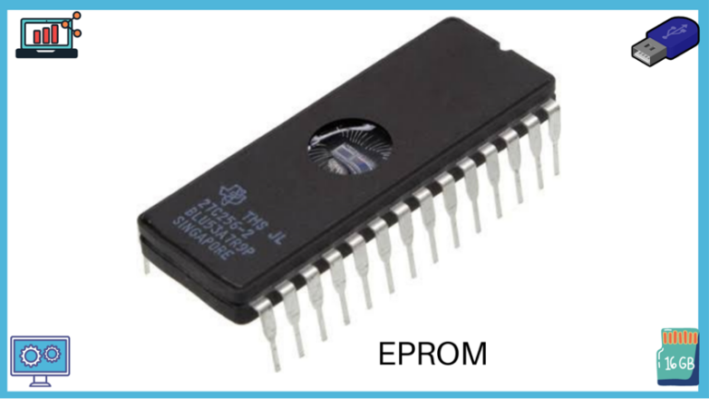

RAM (Random Access Memory)
RAM adalah suatu hardware di dalam komputer yang berfungsi sebagai tempat penyimpanan data sementara memori dan berbagai instruksi program. RAM merupakan salah satu jenis memori semikonduktor dengan proses akses data dilakukan secara acak pada sel-sel memori. Ram dibagi menjadi 2 jenis:
- Static RAM (SRAM): Terdiri atas rangkaian bistable flip-flop. Sifatnya statis, data akan tetap utuh selama ada tegangan listrik
- Dynamic RAM (DRAM): Menggunakan kombinasi transistor dan kapasitor. Sifatnya dinamis, data yang tersimpan selama tegangan mengalir dapat hilang atau berkurang
Berikut ini adalah jenis-jenis RAM yang beredar secara umum.
- FPM (Fast Page Mode) : jenis RAM generasi lama, menerapkan modul SlMM (Single Inline Memory Module).
- EDORAM (Extended Data Output RAM): Jenis RAM generasi awal. Dalam pemasangannnya di mainboard dapat berjumlah lebih dari satu. Adanya sebuah notch pada pin.
- SDRAM (Synchronous Dynamic RAM) : jenis DRAM dengan kecepatan lebih tinggi dari pada RAM generasi sebelumnya, jumlah pin sebanyak 168. Pada kaki-kaki pin terdapat dua notch.
- DDR RAM (Double Data Rate RAM): Generasi dinamis. Memiliki 184 pin dengan satu notch di kakinya. (DDR, DDR2, DDR3, DDR4, dan DDR5).
- RDRAM (Rambus dinamic RAM) : mampu mendukung kecepatan bus hingga 800 MHz, tetapi memiliki jalur data yang sempit, yaitu 8 bit. Ciri fisik memori RDRAM adalah memiliki heat sink, jumlah pin sebanyak 232, dan hanya dapat digunakan oleh motherboard yang memiliki memory controller, misalnya 3dfx seri Voodoo4.
- NVRAM (Non-Volatile RAM) merupakan salah satu jenis non-volatile yang digunakan untuk menyimpan hasil konfigurasi Router.

Gambar 3. EDORAM
Gambar 3. EDORAM

Gambar 4. SDRAM
Gambar 4. SDRAM
Gambar 5. DDR RAM

Gambar 6. NVRAM
Gambar 6. NVRAM
ROM (Read Only Memory)
Pengertian ROM (Read Only Memory) adalah jenis memori atau tempat penyimpanan data di dalam perangkat komputer yang sifatnya permanen. ROM merupakan salah satu jenis memori semikonduktor. Memori ini hanya dapat melakukan proses pembacaan (read) data karena data awal sudah ditetapkan (write) oleh pabrik pembuatnya.
ROM memiliki beberapa tipe, di antaranya adalah sebagai berikut.
- Programmable Read Only Memory(PROM), merupakan memori ROM yang dapat diprogram atau diisi data pengguna. PROM disediakan dalam kondisi kosong oleh produsen pembuatnya sehingga memungkinkan pengguna dapat mengisi atau memprogram ROM tersebut, namun hanya dapat diprogram sekali saja.
- Erasable Programmable Read Only Memory(EPROM), merupakan pengembangan teknologi memori PROM yang dapat melakukan proses baca dan tulis lebih dari satu kali menggunakan sinar ultraungu. Cirí fisik yang dapat dilihat adalah terdapatnya lubang atau celah berupa jendela kaca pada punggung chip yang digunakan sebagai sarana melakukan penghapusan data melalui penyinaran sinar ultraungu pada celah tersebut. EPROM ditunjukkan oleh gambar sebagai berikut.

Gambar 7. EPROM
Gambar 7. EPROM
Mari Berlatih